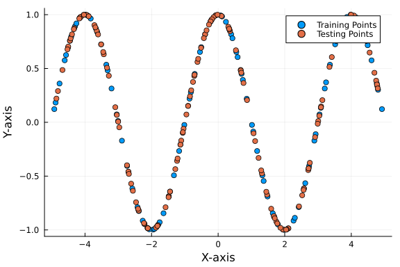
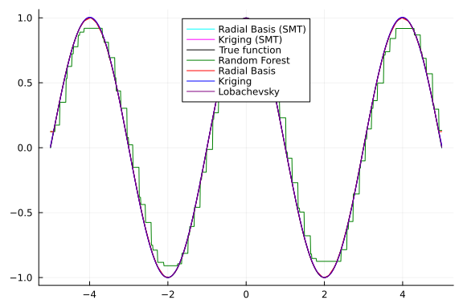

Tensor Product Function
The tensor product function is defined as:
$f(x) = \prod_{i=1}^{d} \cos(a\pi x_i)$
where:
- (d): Represents the dimensionality of the input vector (x).
- (x_i): Represents the (i)-th component of the input vector.
- (a): A constant parameter.
Package Imports
using Surrogates
using SurrogatesRandomForest
using Plots
using Statistics
using PrettyTables
using BenchmarkTools
## Python SMT
using PythonCall
using CondaPkg
smt = pyimport("smt.surrogate_models")
np = pyimport("numpy")Transaction
Prefix: /cache/build/exclusive-amdci3-0/julialang/scimlbenchmarks-dot-jl/
benchmarks/Surrogates/.CondaPkg/env
Updating specs:
- libstdcxx-ng[version='>=3.4,<13.0']
- numpy=*
- conda-forge::python[version='>=3.7,<4',build=*cpython*]
- smt=*
Package Version Build Channel Size
───────────────────────────────────────────────────────────────────────────
──
Install:
───────────────────────────────────────────────────────────────────────────
──
+ libstdcxx-ng 12.3.0 h0f45ef3_5 conda-forge 3MB
+ _libgcc_mutex 0.1 conda_forge conda-forge Cached
+ python_abi 3.11 4_cp311 conda-forge 6kB
+ ld_impl_linux-64 2.40 h41732ed_0 conda-forge Cached
+ ca-certificates 2024.2.2 hbcca054_0 conda-forge 155kB
+ libgomp 13.2.0 h807b86a_5 conda-forge 420kB
+ _openmp_mutex 4.5 2_gnu conda-forge Cached
+ libgcc-ng 13.2.0 h807b86a_5 conda-forge 771kB
+ xorg-libxdmcp 1.1.3 h7f98852_0 conda-forge 19kB
+ pthread-stubs 0.4 h36c2ea0_1001 conda-forge 6kB
+ libbrotlicommon 1.1.0 hd590300_1 conda-forge 69kB
+ libdeflate 1.19 hd590300_0 conda-forge 67kB
+ lerc 4.0.0 h27087fc_0 conda-forge 282kB
+ libjpeg-turbo 3.0.0 hd590300_1 conda-forge 619kB
+ xorg-libxau 1.0.11 hd590300_0 conda-forge 14kB
+ libwebp-base 1.3.2 hd590300_0 conda-forge 402kB
+ openssl 3.2.1 hd590300_0 conda-forge 3MB
+ libxcrypt 4.4.36 hd590300_1 conda-forge Cached
+ libzlib 1.2.13 hd590300_5 conda-forge Cached
+ libffi 3.4.2 h7f98852_5 conda-forge Cached
+ bzip2 1.0.8 hd590300_5 conda-forge Cached
+ ncurses 6.4 h59595ed_2 conda-forge Cached
+ libgfortran5 13.2.0 ha4646dd_5 conda-forge 1MB
+ libuuid 2.38.1 h0b41bf4_0 conda-forge Cached
+ libnsl 2.0.1 hd590300_0 conda-forge Cached
+ libexpat 2.5.0 hcb278e6_1 conda-forge Cached
+ xz 5.2.6 h166bdaf_0 conda-forge Cached
+ libbrotlienc 1.1.0 hd590300_1 conda-forge 283kB
+ libbrotlidec 1.1.0 hd590300_1 conda-forge 33kB
+ libxcb 1.15 h0b41bf4_0 conda-forge 384kB
+ libpng 1.6.42 h2797004_0 conda-forge 289kB
+ zstd 1.5.5 hfc55251_0 conda-forge 545kB
+ tk 8.6.13 noxft_h4845f30_101 conda-forge Cached
+ libsqlite 3.45.1 h2797004_0 conda-forge 859kB
+ readline 8.2 h8228510_1 conda-forge Cached
+ libgfortran-ng 13.2.0 h69a702a_5 conda-forge 24kB
+ brotli-bin 1.1.0 hd590300_1 conda-forge 19kB
+ freetype 2.12.1 h267a509_2 conda-forge 635kB
+ libtiff 4.6.0 ha9c0a0a_2 conda-forge 283kB
+ libopenblas 0.3.26 pthreads_h413a1c8_0 conda-forge 6MB
+ brotli 1.1.0 hd590300_1 conda-forge 19kB
+ openjpeg 2.5.0 h488ebb8_3 conda-forge 357kB
+ lcms2 2.16 hb7c19ff_0 conda-forge 245kB
+ libblas 3.9.0 21_linux64_openblas conda-forge 15kB
+ libcblas 3.9.0 21_linux64_openblas conda-forge 15kB
+ liblapack 3.9.0 21_linux64_openblas conda-forge 15kB
+ tzdata 2024a h0c530f3_0 conda-forge 120kB
+ python 3.11.7 hab00c5b_1_cpython conda-forge 31MB
+ wheel 0.42.0 pyhd8ed1ab_0 conda-forge Cached
+ setuptools 69.0.3 pyhd8ed1ab_0 conda-forge Cached
+ pip 24.0 pyhd8ed1ab_0 conda-forge 1MB
+ six 1.16.0 pyh6c4a22f_0 conda-forge 14kB
+ munkres 1.1.4 pyh9f0ad1d_0 conda-forge 12kB
+ pyparsing 3.1.1 pyhd8ed1ab_0 conda-forge 90kB
+ packaging 23.2 pyhd8ed1ab_0 conda-forge 49kB
+ cycler 0.12.1 pyhd8ed1ab_0 conda-forge 13kB
+ certifi 2024.2.2 pyhd8ed1ab_0 conda-forge 161kB
+ threadpoolctl 3.2.0 pyha21a80b_0 conda-forge 21kB
+ joblib 1.3.2 pyhd8ed1ab_0 conda-forge 221kB
+ python-dateutil 2.8.2 pyhd8ed1ab_0 conda-forge 246kB
+ pillow 10.2.0 py311ha6c5da5_0 conda-forge 42MB
+ kiwisolver 1.4.5 py311h9547e67_1 conda-forge 73kB
+ numpy 1.26.4 py311h64a7726_0 conda-forge 8MB
+ fonttools 4.48.1 py311h459d7ec_0 conda-forge 3MB
+ contourpy 1.2.0 py311h9547e67_0 conda-forge 256kB
+ scipy 1.12.0 py311h64a7726_2 conda-forge 17MB
+ matplotlib-base 3.8.2 py311h54ef318_0 conda-forge 8MB
+ scikit-learn 1.4.0 py311hc009520_0 conda-forge 10MB
+ pydoe3 1.0.1 pyhd8ed1ab_0 conda-forge 24kB
+ smt 2.3.0 py311h320fe9a_1 conda-forge 407kB
Summary:
Install: 70 packages
Total download: 142MB
───────────────────────────────────────────────────────────────────────────
──
Transaction starting
Linking libstdcxx-ng-12.3.0-h0f45ef3_5
Linking _libgcc_mutex-0.1-conda_forge
Linking python_abi-3.11-4_cp311
Linking ld_impl_linux-64-2.40-h41732ed_0
Linking ca-certificates-2024.2.2-hbcca054_0
Linking libgomp-13.2.0-h807b86a_5
Linking _openmp_mutex-4.5-2_gnu
Linking libgcc-ng-13.2.0-h807b86a_5
Linking xorg-libxdmcp-1.1.3-h7f98852_0
Linking pthread-stubs-0.4-h36c2ea0_1001
Linking libbrotlicommon-1.1.0-hd590300_1
Linking libdeflate-1.19-hd590300_0
Linking lerc-4.0.0-h27087fc_0
Linking libjpeg-turbo-3.0.0-hd590300_1
Linking xorg-libxau-1.0.11-hd590300_0
Linking libwebp-base-1.3.2-hd590300_0
Linking openssl-3.2.1-hd590300_0
Linking libxcrypt-4.4.36-hd590300_1
Linking libzlib-1.2.13-hd590300_5
Linking libffi-3.4.2-h7f98852_5
Linking bzip2-1.0.8-hd590300_5
Linking ncurses-6.4-h59595ed_2
Linking libgfortran5-13.2.0-ha4646dd_5
Linking libuuid-2.38.1-h0b41bf4_0
Linking libnsl-2.0.1-hd590300_0
Linking libexpat-2.5.0-hcb278e6_1
Linking xz-5.2.6-h166bdaf_0
Linking libbrotlienc-1.1.0-hd590300_1
Linking libbrotlidec-1.1.0-hd590300_1
Linking libxcb-1.15-h0b41bf4_0
Linking libpng-1.6.42-h2797004_0
Linking zstd-1.5.5-hfc55251_0
Linking tk-8.6.13-noxft_h4845f30_101
Linking libsqlite-3.45.1-h2797004_0
Linking readline-8.2-h8228510_1
Linking libgfortran-ng-13.2.0-h69a702a_5
Linking brotli-bin-1.1.0-hd590300_1
Linking freetype-2.12.1-h267a509_2
Linking libtiff-4.6.0-ha9c0a0a_2
Linking libopenblas-0.3.26-pthreads_h413a1c8_0
Linking brotli-1.1.0-hd590300_1
Linking openjpeg-2.5.0-h488ebb8_3
Linking lcms2-2.16-hb7c19ff_0
Linking libblas-3.9.0-21_linux64_openblas
Linking libcblas-3.9.0-21_linux64_openblas
Linking liblapack-3.9.0-21_linux64_openblas
Linking tzdata-2024a-h0c530f3_0
Linking python-3.11.7-hab00c5b_1_cpython
Linking wheel-0.42.0-pyhd8ed1ab_0
Linking setuptools-69.0.3-pyhd8ed1ab_0
Linking pip-24.0-pyhd8ed1ab_0
Linking six-1.16.0-pyh6c4a22f_0
Linking munkres-1.1.4-pyh9f0ad1d_0
Linking pyparsing-3.1.1-pyhd8ed1ab_0
Linking packaging-23.2-pyhd8ed1ab_0
Linking cycler-0.12.1-pyhd8ed1ab_0
Linking certifi-2024.2.2-pyhd8ed1ab_0
Linking threadpoolctl-3.2.0-pyha21a80b_0
Linking joblib-1.3.2-pyhd8ed1ab_0
Linking python-dateutil-2.8.2-pyhd8ed1ab_0
Linking pillow-10.2.0-py311ha6c5da5_0
Linking kiwisolver-1.4.5-py311h9547e67_1
Linking numpy-1.26.4-py311h64a7726_0
Linking fonttools-4.48.1-py311h459d7ec_0
Linking contourpy-1.2.0-py311h9547e67_0
Linking scipy-1.12.0-py311h64a7726_2
Linking matplotlib-base-3.8.2-py311h54ef318_0
Linking scikit-learn-1.4.0-py311hc009520_0
Linking pydoe3-1.0.1-pyhd8ed1ab_0
Linking smt-2.3.0-py311h320fe9a_1
Transaction finished
To activate this environment, use:
micromamba activate /cache/build/exclusive-amdci3-0/julialang/scimlbenc
hmarks-dot-jl/benchmarks/Surrogates/.CondaPkg/env
Or to execute a single command in this environment, use:
micromamba run -p /cache/build/exclusive-amdci3-0/julialang/scimlbenchm
arks-dot-jl/benchmarks/Surrogates/.CondaPkg/env mycommand
Python: <module 'numpy' from '/cache/build/exclusive-amdci3-0/julialang/sci
mlbenchmarks-dot-jl/benchmarks/Surrogates/.CondaPkg/env/lib/python3.11/site
-packages/numpy/__init__.py'>Define the function
function tensor_product_function(x)
a = 0.5
return prod(cos.(a * π * x))
endtensor_product_function (generic function with 1 method)Define parameters for training and test data
lb = -5.0 # Lower bound of sampling range
ub = 5.0 # Upper bound of sampling range
n_train = 100 # Number of training points
n_test = 150 # Number of testing points150Sample training and test data points
x_train = sample(n_train, lb, ub, SobolSample()) # Sample training data points
y_train = tensor_product_function.(x_train) # Calculate corresponding function values
x_test = sample(n_test, lb, ub, RandomSample()) # Sample larger test data set
y_test = tensor_product_function.(x_test) # Calculate corresponding true function values150-element Vector{Float64}:
0.606472051232782
0.8445649479493853
0.9131793130470989
-0.028393077060722024
-0.3293969012812371
0.9669155136758031
-0.9221683292020114
-0.9885137048149184
-0.29596163748466425
0.8648440331841805
⋮
-0.9322612730628108
-0.9196897406947262
0.9354958997878758
-0.8524139987629917
0.3335106580561711
-0.8514051030428336
0.8603290525250558
0.022396723288478432
-0.1804008609222902Plot training and test points
scatter(x_train, y_train, label="Training Points", xlabel="X-axis", ylabel="Y-axis", legend=:topright)
scatter!(x_test, y_test, label="Testing Points")
Fit surrogate models
# SMT
radial_surrogate_smt = smt.RBF(d0=1.0, poly_degree=1.0, print_global=Py(false))
radial_surrogate_smt.set_training_values(np.array(x_train), np.array(y_train))
radial_surrogate_smt.train()
theta = 0.5 / max(1e-6 * abs(ub - lb), std(x_train))^2.0
kriging_surrogate_smt = smt.KRG(theta0=np.array([theta]), poly="quadratic", print_global=Py(false))
kriging_surrogate_smt.set_training_values(np.array(x_train), np.array(y_train))
kriging_surrogate_smt.train()
# Julia
randomforest_surrogate = RandomForestSurrogate(x_train, y_train, lb, ub, num_round = 10)
radial_surrogate = RadialBasis(x_train, y_train, lb, ub)
kriging_surrogate = Kriging(x_train, y_train, lb, ub)
loba_surrogate = LobachevskySurrogate(x_train, y_train, lb, ub, alpha = 2.0, n = 6)(::Surrogates.LobachevskySurrogate{Vector{Float64}, Vector{Float64}, Float6
4, Int64, Float64, Float64, Vector{Float64}, Bool}) (generic function with
2 methods)Predictions on training and test data
## Training data
radial_train_pred_smt = radial_surrogate_smt.predict_values(np.array(x_train))
radial_train_pred_smt = pyconvert(Matrix{Float64}, radial_train_pred_smt)[:, 1]
kriging_train_pred_smt = kriging_surrogate_smt.predict_values(np.array(x_train))
kriging_train_pred_smt = pyconvert(Matrix{Float64}, kriging_train_pred_smt)[:, 1]
random_forest_train_pred = randomforest_surrogate.(x_train)
radial_train_pred = radial_surrogate.(x_train)
kriging_train_pred = kriging_surrogate.(x_train)
loba_train_pred = loba_surrogate.(x_train)
## Test data
radial_test_pred_smt = radial_surrogate_smt.predict_values(np.array(x_test))
radial_test_pred_smt = pyconvert(Matrix{Float64}, radial_test_pred_smt)[:, 1]
kriging_test_pred_smt = kriging_surrogate_smt.predict_values(np.array(x_test))
kriging_test_pred_smt = pyconvert(Matrix{Float64}, kriging_test_pred_smt)[:, 1]
random_forest_test_pred = randomforest_surrogate.(x_test)
radial_test_pred = radial_surrogate.(x_test)
kriging_test_pred = kriging_surrogate.(x_test)
loba_test_pred = loba_surrogate.(x_test)150-element Vector{Float64}:
0.6064854155242003
0.8445809069866606
0.9131776378609109
-0.028394296598705394
-0.329412569853211
0.9669139233465368
-0.9221601919602044
-0.9885160746667232
-0.29596807024134275
0.864845560831596
⋮
-0.9322425791311004
-0.9196968503484708
0.9355000237327307
-0.8523880646904418
0.3335066218647656
-0.8513857339829656
0.8603690252830117
0.024292827885731682
-0.18039978911447344Define the MSE function
function calculate_mse(predictions, true_values)
return mean((predictions .- true_values).^2) # Calculate mean of squared errors
endcalculate_mse (generic function with 1 method)Calculate MSE for the models
## Training MSE
mse_radial_train_smt = calculate_mse(radial_train_pred_smt, y_train)
mse_krig_train_smt = calculate_mse(kriging_train_pred_smt, y_train)
mse_rf_train = calculate_mse(random_forest_train_pred, y_train)
mse_radial_train = calculate_mse(radial_train_pred, y_train)
mse_krig_train = calculate_mse(kriging_train_pred, y_train)
mse_loba_train = calculate_mse(loba_train_pred, y_train)
## Test MSE
mse_radial_test_smt = calculate_mse(radial_test_pred_smt, y_test)
mse_krig_test_smt = calculate_mse(kriging_test_pred_smt, y_test)
mse_rf_test = calculate_mse(random_forest_test_pred, y_test)
mse_radial_test = calculate_mse(radial_test_pred, y_test)
mse_krig_test = calculate_mse(kriging_test_pred, y_test)
mse_loba_test = calculate_mse(loba_test_pred, y_test)5.888472293149944e-8Compare MSE
models = ["Random Forest", "Radial Basis", "Kriging", "Lobachevsky", "Radial Basis (SMT)", "Kriging (SMT)"]
train_mses = [mse_rf_train, mse_radial_train, mse_krig_train, mse_loba_train, mse_radial_train_smt, mse_krig_train_smt]
test_mses = [mse_rf_test, mse_radial_test, mse_krig_test, mse_loba_test, mse_radial_test_smt, mse_krig_test_smt]
mses = sort(collect(zip(test_mses, train_mses, models)))
pretty_table(hcat(getindex.(mses, 3), getindex.(mses, 2), getindex.(mses, 1)), header=["Model", "Training MSE", "Test MSE"])┌────────────────────┬──────────────┬─────────────┐
│ Model │ Training MSE │ Test MSE │
├────────────────────┼──────────────┼─────────────┤
│ Kriging (SMT) │ 3.60838e-18 │ 6.52071e-18 │
│ Radial Basis (SMT) │ 2.34051e-14 │ 4.58259e-12 │
│ Lobachevsky │ 3.7375e-19 │ 5.88847e-8 │
│ Kriging │ 1.16824e-5 │ 1.61868e-5 │
│ Radial Basis │ 1.74579e-30 │ 0.000201267 │
│ Random Forest │ 0.00176894 │ 0.00880474 │
└────────────────────┴──────────────┴─────────────┘Plot predictions
xs = -5:0.01:5
radial_pred_smt = radial_surrogate_smt.predict_values(np.array(xs))
radial_pred_smt = pyconvert(Matrix{Float64}, radial_pred_smt)[:, 1]
kriging_pred_smt = kriging_surrogate_smt.predict_values(np.array(xs))
kriging_pred_smt = pyconvert(Matrix{Float64}, kriging_pred_smt)[:, 1]
plot(xs, radial_pred_smt, label="Radial Basis (SMT)", legend=:top, color=:cyan)
plot!(xs, kriging_surrogate.(xs), label="Kriging (SMT)", legend=:top, color=:magenta)
plot!(xs, tensor_product_function.(xs), label="True function", legend=:top, color=:black)
plot!(xs, randomforest_surrogate.(xs), label="Random Forest", legend=:top, color=:green)
plot!(xs, radial_surrogate.(xs), label="Radial Basis", legend=:top, color=:red)
plot!(xs, kriging_surrogate.(xs), label="Kriging", legend=:top, color=:blue)
plot!(xs, loba_surrogate.(xs), label="Lobachevsky", legend=:top, color=:purple)
Time evaluation
time_original = @belapsed tensor_product_function.(x_test)
time_radial_smt = @belapsed radial_surrogate_smt.predict_values(np.array(x_test))
time_krig_smt = @belapsed kriging_surrogate_smt.predict_values(np.array(x_test))
time_rf = @belapsed randomforest_surrogate.(x_test)
time_radial = @belapsed radial_surrogate.(x_test)
time_krig = @belapsed kriging_surrogate.(x_test)
time_loba = @belapsed loba_surrogate.(x_test)0.001347901Compare time performance
times = ["Random Forest" => time_rf, "Radial Basis" => time_radial, "Kriging" => time_krig, "Lobachevsky" => time_loba, "Radial Basis (SMT)" => time_radial_smt, "Kriging (SMT)" => time_krig_smt, "Original Function" => time_original]
sorted_times = sort(times, by=x->x[2])
pretty_table(hcat(first.(sorted_times), last.(sorted_times)), header=["Model", "Time(s)"])┌────────────────────┬─────────────┐
│ Model │ Time(s) │
├────────────────────┼─────────────┤
│ Original Function │ 1.549e-6 │
│ Kriging │ 0.000336707 │
│ Radial Basis (SMT) │ 0.000357148 │
│ Lobachevsky │ 0.0013479 │
│ Radial Basis │ 0.00188254 │
│ Random Forest │ 0.00408928 │
│ Kriging (SMT) │ 0.0322772 │
└────────────────────┴─────────────┘